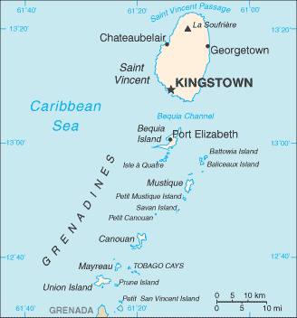
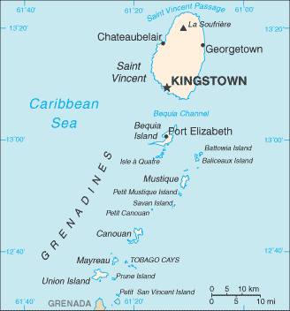

Central America and Caribbean :: SAINT VINCENT AND THE GRENADINES
Introduction :: SAINT VINCENT AND THE GRENADINES
-
Resistance by native Caribs prevented colonization on Saint Vincent until 1719. Disputed between France and the UK for most of the 18th century, the island was ceded to the latter in 1783. Between 1960 and 1962, Saint Vincent and the Grenadines was a separate administrative unit of the Federation of the West Indies. Autonomy was granted in 1969 and independence in 1979.
Geography :: SAINT VINCENT AND THE GRENADINES
-
Caribbean, islands between the Caribbean Sea and North Atlantic Ocean, north of Trinidad and Tobago13 15 N, 61 12 WCentral America and the Caribbeantotal: 389 sq km (Saint Vincent 344 sq km)land: 389 sq kmwater: 0 sq kmcountry comparison to the world: 205twice the size of Washington, DC0 km84 kmterritorial sea: 12 nmcontiguous zone: 24 nmexclusive economic zone: 200 nmcontinental shelf: 200 nmtropical; little seasonal temperature variation; rainy season (May to November)volcanic, mountainousmean elevation: NAelevation extremes: lowest point: Caribbean Sea 0 mhighest point: La Soufriere 1,234 mhydropower, arable landagricultural land: 25.6%arable land 12.8%; permanent crops 7.7%; permanent pasture 5.1%forest: 68.7%other: 5.7% (2011 est.)10 sq km (2012)most of the population is concentrated in and around the capital of Kingstownhurricanes; La Soufriere volcano on the island of Saint Vincent is a constant threatvolcanism: La Soufriere (1,234 m) on the island of Saint Vincent last erupted in 1979; the island of Saint Vincent is part of the volcanic island arc of the Lesser Antilles that extends from Saba in the north to Grenada in the southpollution of coastal waters and shorelines from discharges by pleasure yachts and other effluents; in some areas, pollution is severe enough to make swimming prohibitiveparty to: Biodiversity, Climate Change, Climate Change-Kyoto Protocol, Desertification, Endangered Species, Environmental Modification, Hazardous Wastes, Law of the Sea, Marine Dumping, Ozone Layer Protection, Ship Pollution, Whalingsigned, but not ratified: none of the selected agreementsthe administration of the islands of the Grenadines group is divided between Saint Vincent and the Grenadines and Grenada; Saint Vincent and the Grenadines is comprised of 32 islands and cays
People and Society :: SAINT VINCENT AND THE GRENADINES
-
102,089 (July 2017 est.)country comparison to the world: 195noun: Saint Vincentian(s) or Vincentian(s)adjective: Saint Vincentian or Vincentianblack 66%, mixed 19%, East Indian 6%, European 4%, Carib Amerindian 2%, other 3%English, French patoisProtestant 75% (Anglican 47%, Methodist 28%), Roman Catholic 13%, other (includes Hindu, Seventh-Day Adventist, other Protestant) 12%0-14 years: 21.3% (male 10,970/female 10,779)15-24 years: 15.97% (male 8,226/female 8,080)25-54 years: 42.66% (male 22,608/female 20,939)55-64 years: 10.64% (male 5,595/female 5,272)65 years and over: 9.42% (male 4,515/female 5,105) (2017 est.)total dependency ratio: 46.8youth dependency ratio: 36elderly dependency ratio: 10.8potential support ratio: 9.3 (2015 est.)total: 33.6 yearsmale: 33.8 yearsfemale: 33.4 years (2017 est.)country comparison to the world: 89-0.25% (2017 est.)country comparison to the world: 21813.2 births/1,000 population (2017 est.)country comparison to the world: 1467.3 deaths/1,000 population (2017 est.)country comparison to the world: 121-8.4 migrant(s)/1,000 population (2017 est.)country comparison to the world: 209most of the population is concentrated in and around the capital of Kingstownurban population: 51.2% of total population (2017)rate of urbanization: 0.7% annual rate of change (2015-20 est.)KINGSTOWN (capital) 27,000 (2014)at birth: 1.03 male(s)/female0-14 years: 1.02 male(s)/female15-24 years: 1.02 male(s)/female25-54 years: 1.08 male(s)/female55-64 years: 1.06 male(s)/female65 years and over: 0.87 male(s)/femaletotal population: 1.03 male(s)/female (2016 est.)45 deaths/100,000 live births (2015 est.)country comparison to the world: 100total: 12 deaths/1,000 live birthsmale: 13.1 deaths/1,000 live birthsfemale: 10.9 deaths/1,000 live births (2017 est.)country comparison to the world: 121total population: 75.5 yearsmale: 73.5 yearsfemale: 77.6 years (2017 est.)country comparison to the world: 1041.8 children born/woman (2017 est.)country comparison to the world: 1518.6% of GDP (2014)country comparison to the world: 465.2 beds/1,000 population (2012)improved:urban: 95.1% of populationrural: 95.1% of populationtotal: 95.1% of populationunimproved:urban: 4.9% of populationrural: 4.9% of populationtotal: 4.9% of population (2015 est.)improved:urban: 76.1% of populationrural: 76.1% of populationtotal: 76.1% of populationunimproved:urban: 23.9% of populationrural: 23.9% of populationtotal: 23.9% of population (2007 est.)NANANAnote: active local transmission of Zika virus by Aedes species mosquitoes has been identified in this country (as of August 2016); it poses an important risk (a large number of cases possible) among US citizens if bitten by an infective mosquito; other less common ways to get Zika are through sex, via blood transfusion, or during pregnancy, in which the pregnant woman passes Zika virus to her fetus (2016)23.7% (2016)country comparison to the world: 645.1% of GDP (2010)country comparison to the world: 69total: 33.8%male: 27.8%female: 41.4% (2008 est.)
Government :: SAINT VINCENT AND THE GRENADINES
-
conventional long form: noneconventional short form: Saint Vincent and the Grenadinesetymology: Saint Vincent was named by explorer Christopher COLUMBUS after Saint VINCENT of Saragossa because the 22 January 1498 day of discovery was the saint's feast dayparliamentary democracy (House of Assembly) under a constitutional monarchy; a Commonwealth realmname: Kingstowngeographic coordinates: 13 08 N, 61 13 Wtime difference: UTC-4 (1 hour ahead of Washington, DC, during Standard Time)6 parishes; Charlotte, Grenadines, Saint Andrew, Saint David, Saint George, Saint Patrick27 October 1979 (from the UK)Independence Day, 27 October (1979)several previous; latest passed by the House of Assembly 3 September 2009 (The Saint Vincent and The Grenadines Constitution Act, 2009) (2016)English common lawhas not submitted an ICJ jurisdiction declaration; accepts ICCt jurisdictioncitizenship by birth: yescitizenship by descent: at least one parent must be a citizen of Saint Vincent and the Grenadinesdual citizenship recognized: yesresidency requirement for naturalization: 7 years18 years of age; universalchief of state: Queen ELIZABETH II (since 6 February 1952); represented by Governor General Sir Fredrick Nathaniel BALLANTYNE (since 2 September 2002)head of government: Prime Minister Ralph E. GONSALVES (since 29 March 2001)cabinet: Cabinet appointed by the governor general on the advice of the prime ministerelections/appointments: the monarchy is hereditary; governor general appointed by the monarch; following legislative elections, the leader of the majority party usually appointed prime minister by the governor general; deputy prime minister appointed by the governor general on the advice of the prime ministerdescription: unicameral House of Assembly (21 seats; 15 members directly elected in single-seat constituencies by simple majority vote and 6 appointed by the governor general; members serve 5-year terms)elections: last held on 9 December 2015 (next to be held in 2020)election results: percent of vote by party - ULP 52.3%, NDP 47.4%, other 0.3%; seats by party - ULP 8, NDP 7highest court(s): the Eastern Caribbean Supreme Court (ECSC) is the superior court of the Organization of Eastern Caribbean States; the ECSC - headquartered on St. Lucia - consists of the Court of Appeal - headed by the chief justice and 4 judges - and the High Court with 18 judges; the Court of Appeal is itinerant, travelling to member states on a schedule to hear appeals from the High Court and subordinate courts; High Court judges reside at the member states with 2 assigned to Saint Vincent and the Grenadines; note - Saint Vincent and the Grenadines is also a member of the Caribbean Court of Justicejudge selection and term of office: chief justice of Eastern Caribbean Supreme Court appointed by Her Majesty, Queen ELIZABETH II; other justices and judges appointed by the Judicial and Legal Services Commission, an independent body of judicial officials; Court of Appeal justices appointed for life with mandatory retirement at age 65; High Court judges appointed for life with mandatory retirement at age 62subordinate courts: magistrates' courtsDemocratic Republican Party or DRP [Anesia BAPTISTE]New Democratic Party or NDP [Godwin L. FRIDAY]Unity Labor Party or ULP [Dr. Ralph GONSALVES] (formed by the coalition of Saint Vincent Labor Party or SVLP and the Movement for National Unity or MNU)SVG Green Party or SVGP [Ivan O'NEAL]St. Vincent & the Grenadines Teachers' Union [Oswald CHAMBERS]other: several labor unionsACP, AOSIS, C, Caricom, CDB, CELAC, FAO, G-77, IBRD, ICAO, ICCt, ICRM, IDA, IFAD, IFRCS, ILO, IMF, IMO, Interpol, IOC, IOM, ISO (subscriber), ITU, MIGA, NAM, OAS, OECS, OPANAL, OPCW, Petrocaribe, UN, UNCTAD, UNESCO, UNIDO, UPU, WFTU (NGOs), WHO, WIPO, WTOchief of mission: Ambassador Lou-Anne Gaylene GILCHRIST (since 18 January 2017)chancery: 3216 New Mexico Avenue NW, Washington, DC 20016telephone: [1] (202) 364-6730FAX: [1] (202) 364-6736consulate(s) general: New Yorkthe US does not have an embassy in Saint Vincent and the Grenadines; the US Ambassador to Barbados is accredited to Saint Vincent and the Grenadinesthree vertical bands of blue (hoist side), gold (double width), and green; the gold band bears three green diamonds arranged in a V pattern, which stands for Vincent; the diamonds recall the islands as "the Gems of the Antilles" and are set slightly lowered in the gold band to reflect the nation's position in the Antilles; blue conveys the colors of a tropical sky and crystal waters, yellow signifies the golden Grenadine sands, and green represents lush vegetationSaint Vincent parrot; national colors: blue, gold, greenname: "St. Vincent! Land So Beautiful!"lyrics/music: Phyllis Joyce MCCLEAN PUNNETT/Joel Bertram MIGUELnote: adopted 1967
Economy :: SAINT VINCENT AND THE GRENADINES
-
Success of the economy hinges upon seasonal variations in agriculture, tourism, and construction activity, as well as remittances. Much of the workforce is employed in banana production and tourism. Saint Vincent and the Grenadines is home to a small offshore banking sector and continues to fully adopt international regulatory standards.This lower-middle-income country remains vulnerable to natural and external shocks. The economy has shown some signs of recovery due to increased tourist arrivals, falling oil prices and renewed growth in the construction sector. The much anticipated international airport opened in early 2017 with hopes for increased airlift and tourism activity. The government's ability to invest in social programs and respond to external shocks is constrained by its high public debt burden, which was 67% of GDP at the end of 2013.$1.232 billion (2016 est.)$1.207 billion (2015 est.)$1.184 billion (2014 est.)note: data are in 2016 dollarscountry comparison to the world: 201$770 million (2016 est.)0.8% (2016 est.)0.9% (2015 est.)0.3% (2014 est.)country comparison to the world: 145$11,200 (2016 est.)$11,100 (2015 est.)$11,000 (2014 est.)note: data are in 2016 dollarscountry comparison to the world: 133-5.1% of GDP (2016 est.)-3.1% of GDP (2015 est.)-0.7% of GDP (2014 est.)country comparison to the world: 172household consumption: 87.8%government consumption: 18.5%investment in fixed capital: 19.7%investment in inventories: -0.2%exports of goods and services: 21.1%imports of goods and services: -47.1% (2016 est.)agriculture: 7.1%industry: 17.4%services: 75.4% (2016 est.)bananas, coconuts, sweet potatoes, spices; small numbers of cattle, sheep, pigs, goats; fishtourism; food processing, cement, furniture, clothing, starch2.3% (2016 est.)country comparison to the world: 10057,520 (2007 est.)country comparison to the world: 189agriculture: 26%industry: 17%services: 57% (1980 est.)18.8% (2008 est.)country comparison to the world: 181NA%lowest 10%: NA%highest 10%: NA%revenues: $222.2 millionexpenditures: $222.2 million (2016 est.)28.7% of GDP (2016 est.)country comparison to the world: 890% of GDP (2016 est.)country comparison to the world: 4379.2% of GDP (2016 est.)81.3% of GDP (2015 est.)country comparison to the world: 39calendar year-0.2% (2016 est.)-1.7% (2015 est.)country comparison to the world: 436.5% (31 December 2010)6.5% (31 December 2009)country comparison to the world: 599.17% (31 December 2016 est.)9.3% (31 December 2015 est.)country comparison to the world: 91$177.7 million (31 December 2016 est.)$162.2 million (31 December 2015 est.)country comparison to the world: 186$563.2 million (31 December 2016 est.)$546.6 million (31 December 2015 est.)country comparison to the world: 182$424.6 million (31 December 2016 est.)$439 million (31 December 2015 est.)country comparison to the world: 179$-122 million (2016 est.)$-183.4 million (2015 est.)country comparison to the world: 81$47.3 million (2016 est.)$48.5 million (2015 est.)country comparison to the world: 205bananas, eddoes and dasheen (taro), arrowroot starch; tennis racquetsBarbados 18.3%, St. Lucia 17.6%, Antigua and Barbuda 14.8%, Trinidad and Tobago 12.3%, Dominica 9.5%, St. Kitts and Nevis 7.3%, Grenada 5.9% (2016)$289.9 million (2016 est.)$297.3 million (2015 est.)country comparison to the world: 201foodstuffs, machinery and equipment, chemicals and fertilizers, minerals and fuelsUS 44%, Trinidad and Tobago 14.1%, UK 6.5%, France 4.8% (2016)$192.3 million (31 December 2016 est.)$166 million (31 December 2015 est.)country comparison to the world: 159$330.8 million (31 December 2016 est.)$338.6 million (31 December 2015 est.)country comparison to the world: 184East Caribbean dollars (XCD) per US dollar -2.7 (2016 est.)2.7 (2015 est.)2.7 (2014 est.)2.7 (2013 est.)2.7 (2012 est.)
Energy :: SAINT VINCENT AND THE GRENADINES
-
population without electricity: 25,587electrification - total population: 76%electrification - urban areas: 100%electrification - rural areas: 32% (2012)155 million kWh (2015 est.)country comparison to the world: 195144.2 million kWh (2015 est.)country comparison to the world: 1970 kWh (2016 est.)country comparison to the world: 2110 kWh (2016 est.)country comparison to the world: 21448,000 kW (2015 est.)country comparison to the world: 19283.3% of total installed capacity (2015 est.)country comparison to the world: 790% of total installed capacity (2015 est.)country comparison to the world: 20314.6% of total installed capacity (2015 est.)country comparison to the world: 1032.1% of total installed capacity (2015 est.)country comparison to the world: 1200 bbl/day (2016 est.)country comparison to the world: 2080 bbl/day (2014 est.)country comparison to the world: 2070 bbl/day (2014 est.)country comparison to the world: 2050 bbl (1 January 2017 es)country comparison to the world: 2080 bbl/day (2014 est.)country comparison to the world: 2091,600 bbl/day (2015 est.)country comparison to the world: 1970 bbl/day (2014 est.)country comparison to the world: 2101,519 bbl/day (2014 est.)country comparison to the world: 1940 cu m (2013 est.)country comparison to the world: 2080 cu m (2013 est.)country comparison to the world: 1430 cu m (2013 est.)country comparison to the world: 2040 cu m (2013 est.)country comparison to the world: 2040 cu m (1 January 2014 es)country comparison to the world: 204300,000 Mt (2013 est.)country comparison to the world: 194
Communications :: SAINT VINCENT AND THE GRENADINES
-
total subscriptions: 20,550subscriptions per 100 inhabitants: 20 (July 2016 est.)country comparison to the world: 175total: 112,649subscriptions per 100 inhabitants: 110 (July 2016 est.)country comparison to the world: 188general assessment: adequate islandwide, fully automatic telephone systemdomestic: fixed-line teledensity exceeds 20 per 100 persons and mobile-cellular teledensity is about 110 per 100 personsinternational: country code - 1-784; the East Caribbean Fiber System and Southern Caribbean Fiber submarine cables carry international calls; connectivity also provided by VHF/UHF radiotelephone from Saint Vincent to Barbados; SHF radiotelephone to Grenada and Saint Lucia; access to Intelsat earth station in Martinique through Saint Lucia (2016)St. Vincent and the Grenadines Broadcasting Corporation operates 1 TV station and 5 repeater stations that provide near total coverage to the multi-island state; multi-channel cable TV service available; a partially government-funded national radio service broadcasts on 1 station and has 2 repeater stations; about a dozen privately owned radio stations and repeater stations (2007).vctotal: 53,000percent of population: 51.8% (July 2016 est.)country comparison to the world: 177
Transportation :: SAINT VINCENT AND THE GRENADINES
-
number of registered air carriers: 2inventory of registered aircraft operated by air carriers: 11 (2015)J8 (2016)6 (2013)country comparison to the world: 175total: 51,524 to 2,437 m: 1914 to 1,523 m: 3under 914 m: 1 (2017)total: 1under 914 m: 1 (2013)total: 829 kmpaved: 580 kmunpaved: 249 km (2003)country comparison to the world: 189total: 412by type: bulk carrier 64, cargo 263, carrier 14, chemical tanker 4, container 18, liquefied gas 3, passenger 2, passenger/cargo 7, petroleum tanker 9, refrigerated cargo 12, roll on/roll off 15, specialized tanker 1foreign-owned: 325 (Austria 1, Azerbaijan 1, Bangladesh 1, Belgium 7, Bermuda 1, Bulgaria 9, China 65, Croatia 8, Cyprus 3, Czech Republic 1, Denmark 9, Dominica 1, Egypt 2, Estonia 8, France 2, Germany 3, Greece 42, Guyana 2, Hong Kong 5, Israel 3, Italy 4, Japan 3, Kenya 2, Latvia 15, Lebanon 2, Lithuania 9, Monaco 2, Netherlands 1, Norway 13, Poland 3, Romania 1, Russia 11, Singapore 5, Slovenia 1, Sweden 10, Switzerland 7, Syria 9, Turkey 13, UAE 3, UK 6, Ukraine 12, US 18, Venezuela 1) (2010)country comparison to the world: 26major seaport(s): Kingstown
Military and Security :: SAINT VINCENT AND THE GRENADINES
-
no regular military forces; Royal Saint Vincent and the Grenadines Police Force (RSVPF) (2013)
Transnational Issues :: SAINT VINCENT AND THE GRENADINES
-
joins other Caribbean states to counter Venezuela's claim that Aves Island sustains human habitation, a criterion under UN Convention on the Law of the Sea, which permits Venezuela to extend its EEZ/continental shelf over a large portion of the eastern Caribbean Seacurrent situation: Saint Vincent and the Grenadines is a source, transit, and destination country for men, women, and children subjected to forced labor and sex trafficking; some children under 18 are pressured to engage in sex acts in exchange for money or gifts; foreign workers may experience forced labor and are particularly vulnerable when employed by small, foreign-owned companies; adults and children are vulnerable to forced labor domestically, especially in the agriculture sectortier rating: Tier 2 Watch List – Saint Vincent and the Grenadines does not fully comply with the minimum standards for the elimination of trafficking; however, it is making significant efforts to do so; the government for the first time acknowledged a trafficking problem, launched an anti-trafficking public awareness campaign, and conducted anti-trafficking training for law enforcement, immigration, and labor officials; in 2014, authorities initiated three trafficking investigations, two of which were ultimately determined not to be trafficking cases, and did not prosecute or convict any trafficking offenders; the government did not identify or refer any potential trafficking victims to care (2015)transshipment point for South American drugs destined for the US and Europe; small-scale cannabis cultivation